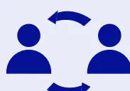
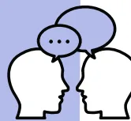
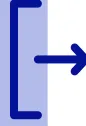
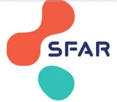

Suite à un évènement en lien avec la gestion des voies aériennes...

Moi ou toute autre personne peut...
Demandez ou initiez un débriefing.
Dès la fin de l'évènement
+/- quelques jours-semaines après.
Toutes celles et ceux qui auraient été acteurs, ou spectateurs de la situation, sans distinction de fonction.

Qu'est-ce qui s'est passé ?
Intubation ou Ventilation difficile, nombres d'essais, désaturation....
Ce qui a permis de réussir ? Vidéo laryngoscope, mandrin, appel à l'aide, fibroscopie, prise de décision....
Ce qu'on pourrait améliorer ? sur un plan technique, sur un plan organisationnel, dans le travail d'équipe....

Enjeux sécuritaires :
La confidentialité est garantie lors des échanges
Juger est inutile
Dénigrer n'est pas permis
Facteurs Humains en Santé
Ensemble pour la qualité et sécurité des soins
